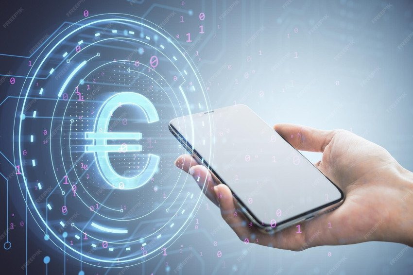
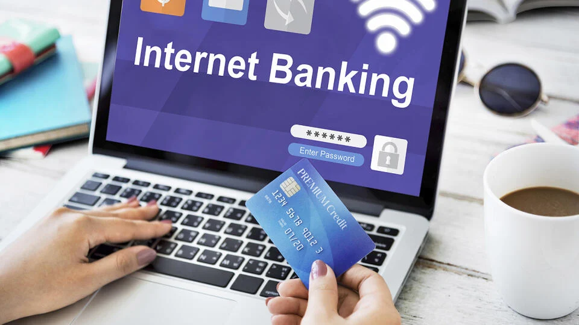
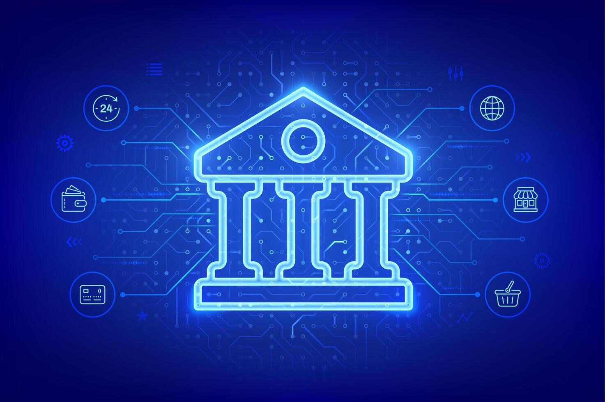

Elektronické bankovníctvo predstavuje moderný spôsob poskytovania bankových služieb prostredníctvom elektronických kanálov, vďaka čomu klient nemusí navštevovať pobočku banky. Medzi jeho základné formy patrí internet banking, ktorý umožňuje prístup k účtu cez webové rozhranie, mobil banking dostupný prostredníctvom aplikácií v smartfónoch, phone banking, pri ktorom klient využíva služby cez telefón, či SMS banking, ktorý poskytuje informácie o pohyboch na účte formou textových správ. Dôležitou súčasťou elektronického bankovníctva sú aj platobné karty a online platobné brány, ktoré umožňujú bezpečné bezhotovostné transakcie.Výhodou elektronického bankovníctva je jeho nepretržitá dostupnosť 24 hodín denne a 7 dní v týždni, rýchlosť a pohodlnosť vykonávania transakcií, nižšie poplatky oproti tradičným pobočkovým službám, ako aj možnosť sledovať pohyby na účte v reálnom čase. Na druhej strane však prináša aj určité riziká, najmä v oblasti bezpečnosti. Klienti môžu čeliť kybernetickým útokom, phishingu či podvodným webovým stránkam, preto je dôležité používať silné heslá, dvojfaktorovú autentifikáciu, aktualizované zariadenia a vyhýbať sa pripojeniu na nezabezpečené verejné siete.Od roku 2017 sa elektronické bankovníctvo výrazne posunulo vpred. Moderné mobilné aplikácie dnes ponúkajú biometrické overenie, ako je odtlačok prsta alebo rozpoznávanie tváre, umožňujú okamžité platby a sú prepojené s digitálnymi peňaženkami, napríklad Google Pay či Apple Pay. Elektronické bankovníctvo sa tak stalo neoddeliteľnou súčasťou každodenného finančného života a výrazne zjednodušuje správu financií.
V ponuke služieb v oblasti elektronického bankovníctva sú:
– komunikácia klienta s bankou prostredníctvom internetu, pričom môže byť buď pasívny alebo aktívny.
– všeobecný termín používaný pre realizáciu pasívnych alebo aktívnych bankových operácií prostredníctvom mobilného telefónu. Pod mobil banking spadá SMS banking, WAP banking, GSM banking, SIM Toolkit banking a pod.
– komunikácia klienta s bankou cez SMS správy, ktorá môže byť buď pasívna (informatívna) alebo aktívna (realizácia aktívnych operácií s prostriedkami uloženými na účte klienta).
- služba, ktorá umožňuje komunikáciu medzi klientom a bankou prostredníctvom prepojenia osobného počítača klienta, ktorý je vybavený špeciálnym softwarom (aplikáciou) banky.
– služba umožňujúca klientovi komunikovať s bankou prostredníctvom telefónneho aparátu s tónovou voľbou, možnosťou spojenia s hlasovým informačným systémom alebo s operátom.
– umožňujúci pasívne alebo aktívne operácia s účtom prostredníctvom GSM mobilnej siete. V GSM bankingu môže prebiehať komunikácia medzi klientom a bankou formou zašifrovaných alebo nezašifrovaných textových správ, WAPu alebo JAVA. V prípade zašifrovaných textových správ sa využíva napr. technológia SIM Toolkit, pri ktorej sa do mobilného telefónu vloží špeciálna SIM Toolkit karta s nahratou bankovou aplikáciou, ktorá zabezpečí odoslanie zašifrovaných správ a odšifrovanie prijatých správ. V prípade nezašifrovaných SMS správ je možné využiť všetky druhy SIM kariet. Komunikácia s bankou je potom založená na princípe odosielania a prijímania klasických krátkych textových správ, pričom bezpečnosť je postavená buď len na zadaní PIN kódu ku konkrétnej SIM karte alebo využití tzv. autentizačných kalkulátorov.
– zasielanie mailových správ o operáciách na bežnom účte na e-mail klienta.
- využitie mobilného telefónu s možnosťou pripojenia na internet prostredníctvom aplikácie WAP s následným realizovaním aktívnych alebo pasívnych operácií cez WAP.